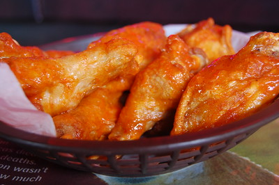

Crispy Baked Chicken Wings

Description
These crispy oven Baked Chicken Wings are so easy to prepare and you
don't even need to bother with all the grease from frying
Whether you're watching football, basketball or even your favourite show, these wings
are baked to crispy perfection, and then tossed in the most delicious sweet and spicy
buffalo sauce. They're totally addicting and perfect for game day! Make them ASAP, and
then thank me later!
Ingredients
- 4 pounds chicken wings
- 2 tablespoons baking powder
- 3/4 teaspoon salt
- 1/2 teaspoon cracker black pepper
- 1 teaspoon paprika
- teaspoon garlic powder
Buffalo Sauce:
- 1/3 cup Frank's Wings Hot Sauce
- 1 cup light brown sugar
- 1 tablespoon water
Steps
- Adjust your oven rack to the upper-middle position. Preheat oven to 425 degrees F.
- Line a baking sheet with aluminum foil and place a wire rack (I use a cooling rack) on top. Spray the rack with non-stick spray.
- Use paper towels to pat the wings dry and place them in a large bowl. It's important to dry them REALLY well!
- Combine the salt, pepper, garlic powder, paprika, and baking powder in a small bowl. Then sprinkle the seasoning over the wings, tossing to evenly coat.
- Arrange wings, skin side up, in single layer on prepared wire rack.
- Bake on the upper middle oven rack, turning every 20 minutes until wings are crispy and browned. The total cook time will depend on the size of the wings but may take up to 1 hour.
- Remove from oven and let stand for 5 minutes. Transfer wings to bowl and toss with sauce.
For Buffalo Sauce:
- In a medium saucepan over medium heat stir together all sauce ingredients. Mix well until sugar has dissolved.
- Remove from heat and allow to cool to room temperature before adding to wings (or prepare the sauce ahead of time and refrigerate).
Home